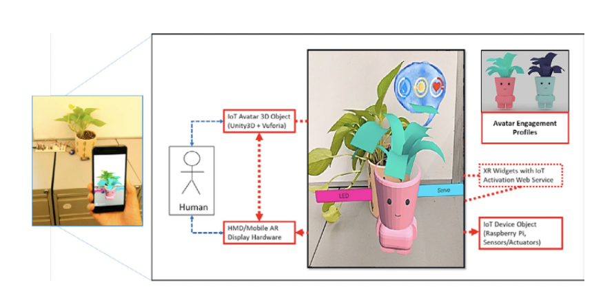
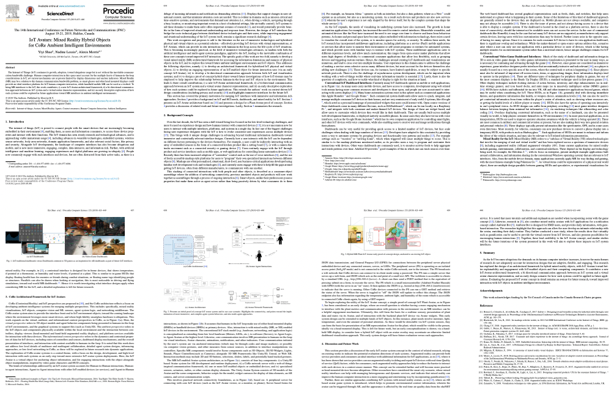

IoT avatars: Mixed reality hybrid objects for core ambient intelligent environments

|
Hybrid MR Plant IoT Avatar early proof-of-concept design, anchored to an existing IoT object.
|
Abstract: The Internet of Things (IoT) continues its growth, adoption, toward ubiquitous usage but is not without the inevitable communi-
cation bandwidth challenge. Human-computer-interaction in this space must account for the multiple facets of human-in-the-loop
considerations in IoT, yet current mechanisms are at present limited by display dimensions and unclear indicators. Mixed Reality
(MR) may be a solution to this human communication bandwidth problem, as smart glasses and other head mounted displays could
provide an ideal interface platform for IoT human-computer interaction, while handheld mobile MR can be used as a testbed. To
bring MR interfaces to the IoT, this work contributes; i) a new IoT-Avatar architectural framework; ii) a bi-directional communica-
tion approach between an IoT system and a virtual avatar character representation; and iii) an early descriptive exploration of how
such systems could be explored in future applications toward MR interfaces in ambient intelligent environments.
Paper
|  |
Shao, Lessio, Morris.
IoT avatars: Mixed reality hybrid objectsfor core ambient intelligent environments.
Procedia Computer Science 2019.
[Paper]
[Bibtex]
|
Acknowledgements
This work acknowledges funding by the Tri-Council of Canada under the Canada Research Chairs program.
|